Actual native Surf into the thin sea overhang stops at the solid body; normal disembark. Independent column23.Independent column24: real sea/Surf remains valid, solid body remains impassable.Exit terminal, walk to the main promenade and return via a dry boardwalk, then use the right leaf. No Survey Surf shortcut.Actual4F window drop to the exact balcony landing. The full stair/top/elevator return is separately asserted.Push right and press A at inner balcony rail: no falling movement or illegitimate Surf.Independent northern balcony boundary push/A check.Real1F panel selection and left native dynamic-warp exit.Independent right elevator leaf to1F.Real6F panel selection and left exit.Independent right elevator leaf to6F.Native240x160 frame after the named passing controller case.
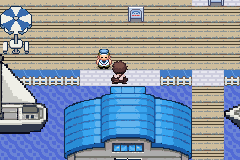
Native240x160 frame after the named passing controller case.
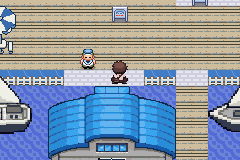
Native240x160 frame after the named passing controller case.
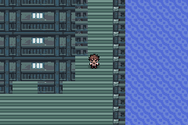
Native240x160 frame after the named passing controller case.
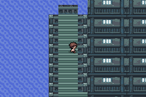
Native240x160 frame after the named passing controller case.
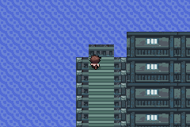
Exact named Ecruteak doorway segment, native arrival and actual dry walk-away. No neighbouring-leaf fallback.Exact named Ecruteak doorway segment, native arrival and actual dry walk-away. No neighbouring-leaf fallback.Exact named Ecruteak doorway segment, native arrival and actual dry walk-away. No neighbouring-leaf fallback.Exact named Ecruteak doorway segment, native arrival and actual dry walk-away. No neighbouring-leaf fallback.Exact named Ecruteak doorway segment, native arrival and actual dry walk-away. No neighbouring-leaf fallback.Exact named Ecruteak doorway segment, native arrival and actual dry walk-away. No neighbouring-leaf fallback.Exact named Ecruteak doorway segment, native arrival and actual dry walk-away. No neighbouring-leaf fallback.Exact named Ecruteak doorway segment, native arrival and actual dry walk-away. No neighbouring-leaf fallback.Independent visible Olivine door/aisle leaf, exact native arrival and dry walk-away.Independent visible Olivine door/aisle leaf, exact native arrival and dry walk-away.Independent visible Olivine door/aisle leaf, exact native arrival and dry walk-away.Independent visible Olivine door/aisle leaf, exact native arrival and dry walk-away.Independent visible Olivine door/aisle leaf, exact native arrival and dry walk-away.Independent visible Olivine door/aisle leaf, exact native arrival and dry walk-away.Independent visible Olivine door/aisle leaf, exact native arrival and dry walk-away.Independent visible Olivine door/aisle leaf, exact native arrival and dry walk-away.Independent visible Olivine door/aisle leaf, exact native arrival and dry walk-away.Independent visible Olivine door/aisle leaf, exact native arrival and dry walk-away.Independent visible Olivine door/aisle leaf, exact native arrival and dry walk-away.Independent visible Olivine door/aisle leaf, exact native arrival and dry walk-away.Independent visible Olivine door/aisle leaf, exact native arrival and dry walk-away.Independent visible Olivine door/aisle leaf, exact native arrival and dry walk-away.Actual rescue choice, exact met origin/level and uniqueness verified on the engine.
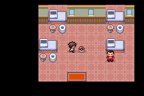
Actual rescue choice, exact met origin/level and uniqueness verified on the engine.Actual rescue choice, exact met origin/level and uniqueness verified on the engine.Actual Joe directional sprite VRAM matches the supplied art; saved gender retained.
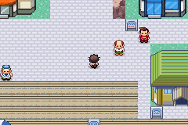
Actual Joe directional sprite VRAM matches the supplied art; saved gender retained.
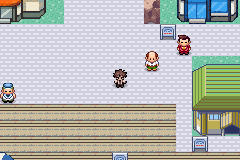
Actual Joe directional sprite VRAM matches the supplied art; saved gender retained.Actual Joe directional sprite VRAM matches the supplied art; saved gender retained.Fresh player actual Jasmine practice loss → Olivine Center, healed party and Joe retained.Frame-by-frame native Fly departure with actual Joe field-pose ID and exact VRAM check.Actual Fly UI/Joe pose/destination; all10 destinations, cancellation and postflight normal Save/cold Continue passed.
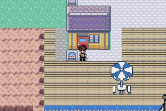
Actual Fly UI/Joe pose/destination; all10 destinations, cancellation and postflight normal Save/cold Continue passed.Actual Fly UI/Joe pose/destination; all10 destinations, cancellation and postflight normal Save/cold Continue passed.
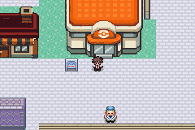
Actual Fly UI/Joe pose/destination; all10 destinations, cancellation and postflight normal Save/cold Continue passed.
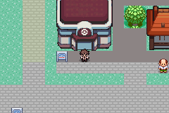
Actual Joe field-state graphics ID and VRAM checked in the native engine. Bike/rod gear is a disclosed private RAM fixture.Actual Joe field-state graphics ID and VRAM checked in the native engine. Bike/rod gear is a disclosed private RAM fixture.Actual Joe field-state graphics ID and VRAM checked in the native engine. Bike/rod gear is a disclosed private RAM fixture.
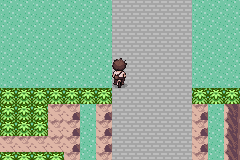
Actual Joe field-state graphics ID and VRAM checked in the native engine. Bike/rod gear is a disclosed private RAM fixture.
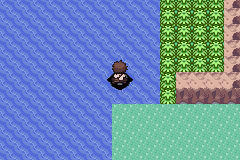
Actual Joe field-state graphics ID and VRAM checked in the native engine. Bike/rod gear is a disclosed private RAM fixture.
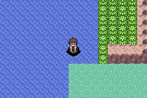
Actual Joe field-state graphics ID and VRAM checked in the native engine. Bike/rod gear is a disclosed private RAM fixture.Actual Joe field-state graphics ID and VRAM checked in the native engine. Bike/rod gear is a disclosed private RAM fixture.
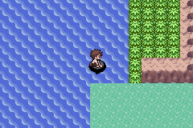
Actual Joe field-state graphics ID and VRAM checked in the native engine. Bike/rod gear is a disclosed private RAM fixture.
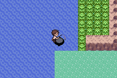
Paired32-frame normal input trials from the same normally reached road position; B-running moves farther and both show Joe VRAM.
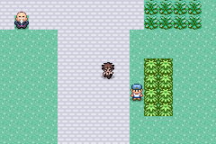
Paired32-frame normal input trials from the same normally reached road position; B-running moves farther and both show Joe VRAM.
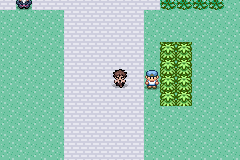
Paired32-frame normal input trials from the same normally reached road position; B-running moves farther and both show Joe VRAM.Paired32-frame normal input trials from the same normally reached road position; B-running moves farther and both show Joe VRAM.